T³Composer 처음 사용자 가이드T³Composer Beginner Guide
개발을 몰라도 화면을 만들어 볼 수 있습니다 Build a screen yourself — no development background needed
이 가이드는 누구를 위한 것인가요?Who is this guide for?
개발을 해본 적 없는 분 — 예를 들어 화면 요구사항을 문서(워드·엑셀·PPT)로만 작성해서
개발팀에 전달해 오신 컨설턴트·기획자 분들을 위해 썼습니다. "프로그래밍 용어를 하나도
몰라도 화면 하나를 직접 만들어 볼 수 있게" 하는 것이 목표입니다.
People who have never written code — for example consultants and planners who used to
describe screen requirements in documents (Word, Excel, PowerPoint) and hand them to a development
team. The goal is simple: build one screen yourself without knowing a single programming term.
개발 용어가 나오면 그때그때 쉬운 말로 먼저 설명하고, 괄호 안에 원래 용어를 적어둡니다. Whenever a technical term appears, it is explained in plain language first, with the original term in parentheses.
💡 이 문서를 다 읽을 필요는 없습니다. 3장까지만 읽고 따라 하면 첫 화면을 만들어 볼 수 있습니다. 나머지는 필요할 때 찾아보는 사전처럼 쓰세요. 💡 You do not need to read all of this. Follow along through Chapter 3 and you will have built your first screen. Use the rest as a reference when you need it.
🖥️ 이미 T³Composer 를 설치해 두셨다면 1장은 건너뛰고 2장부터 보시면 됩니다. 🖥️ If T³Composer is already installed, skip Chapter 1 and start from Chapter 2.
1 설치 — 시작하기 전에 준비할 것Install — What to Prepare
설치는 보통 한 번만 해두면 됩니다. Installation is normally a one-time task.
1-1. 준비물 확인What you need
설치에 필요한 것은 아래 세 가지입니다. Three things are required.
| 준비물Item | 설명Description |
|---|---|
| Docker Desktop | 프로그램을 통째로 담아 실행해주는 도구입니다 (설치 파일 하나로 여러 프로그램을 한 번에 띄워줌). 공식 사이트에서 무료로 받을 수 있고, 설치 후 실행해 둔 상태여야 합니다. A tool that packages and runs whole programs (one install starts several programs at once). Free from the official site; it must be running after installation. |
| PC 사양PC specs | 메모리 최소 8GB (권장 16GB) · 디스크 여유공간 10GB 이상. 일반 업무용 노트북이면 대부분 충족합니다. 8GB RAM minimum (16GB recommended) · 10GB+ free disk. Most work laptops meet this. |
| Anthropic API 키Anthropic API key | AI(Claude)를 호출할 때 쓰는 "출입증" 같은 문자열입니다. 없으면 화면 생성이 안 됩니다 — 개인 키를 사용하시거나 황금향 재무팀장님께 요청하세요. 현재는 선결제된 회사 API 키를 사용합니다. A string that acts like a pass when calling the AI (Claude). Without it, screen generation will not work — use your personal key or request one from Finance Team Lead Hwang Geum-hyang. A prepaid company API key is currently in use. |
https://github.com/zionex/t3-composer.git 이며, 받는 방법은
1-4 에 3가지로 안내되어 있습니다. GitHub 저장소가 열리지 않으면 접근 권한 신청이 필요합니다.
The repository is https://github.com/zionex/t3-composer.git; three ways to get it
are described in 1-4. If the repository does not open, you need access permission.
1-2. 설치 5단계Five install steps
※ 안내문에 나오는 "컨테이너" 는 Docker 가 프로그램을 담아두는 상자를 뜻합니다 — 그냥 "프로그램" 이라고 생각하시면 됩니다. A single command starts everything at once — UI, server, and database.
※ A "container" is just the box Docker keeps a program in — read it as "program".
http://localhost:5173 을 주소창에 입력하면 T³Composer 화면이 나타납니다.
Enter http://localhost:5173 in the address bar to see T³Composer.1-3. Docker Desktop 설치Installing Docker Desktop
T³Composer 는 화면·서버·데이터베이스 여러 프로그램이 함께 돌아갑니다. 그 여러 개를 하나씩 설치하지 않고 한꺼번에 켜주는 도구가 Docker Desktop 입니다. 아래 여섯 화면만 따라오시면 됩니다. 설치는 처음 한 번뿐입니다. T³Composer runs several programs together — UI, server, and database. Docker Desktop is the tool that starts them all at once instead of installing each one. Just follow the six screens below. You only do this once.
① 내려받기 — 어떤 걸 받나요?Download — which one?
docker.com 에서 Download Docker Desktop 버튼 옆 화살표를 누르면 목록이 펼쳐집니다. On docker.com, click the arrow next to Download Docker Desktop to open the list.
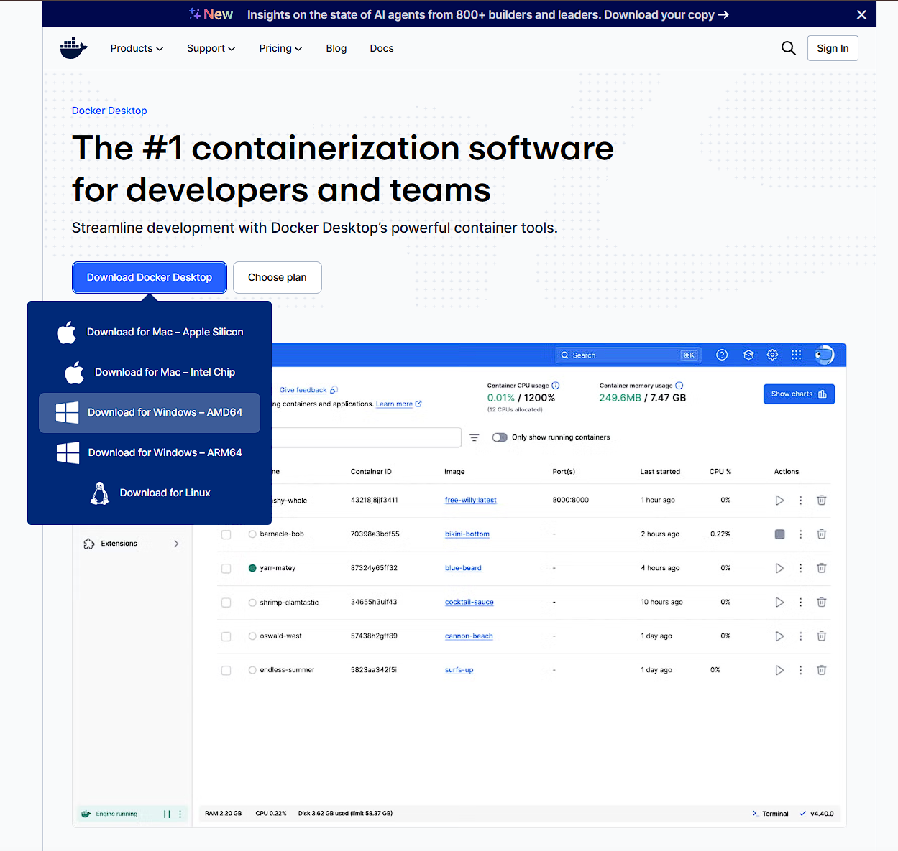
확인하려면 Win + Pause → 시스템 종류 를 보세요.
x64 기반 프로세서 면 AMD64, ARM 기반 이면 ARM64 입니다.
It covers both Intel and AMD, so almost every work laptop uses AMD64.
To check: Win + Pause → System type.
x64-based processor means AMD64; ARM-based means ARM64.
② 설치 옵션 — 그대로 두고 OKInstall options — leave as-is, click OK
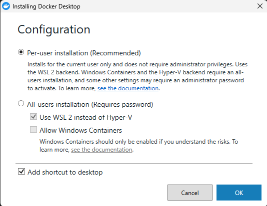
| 항목Option | 왜 그대로 두나요?Why leave it? |
|---|---|
| Per-user installation (선택됨)(selected) | 관리자 비밀번호가 필요 없고, 우리가 쓰는 방식(WSL 2)으로 설치됩니다 No admin password needed, and it installs the way we need (WSL 2) |
| Allow Windows Containers (해제됨)(unchecked) | T³Composer 의 프로그램은 전부 Linux 방식이라 켤 필요가 없습니다 Everything in T³Composer is Linux-based, so this is not needed |
| Add shortcut to desktop | 취향 — 켜두면 바탕화면에서 바로 찾을 수 있습니다 Optional — leave it on for a desktop icon |
③ 설치 완료 → PC 재시작Finished → restart your PC
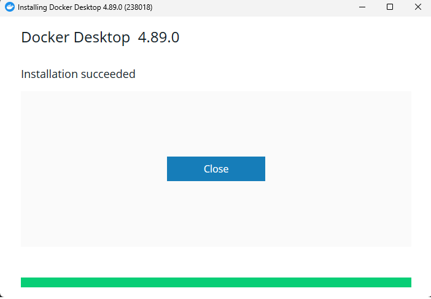
④ 약관 동의Accept the terms
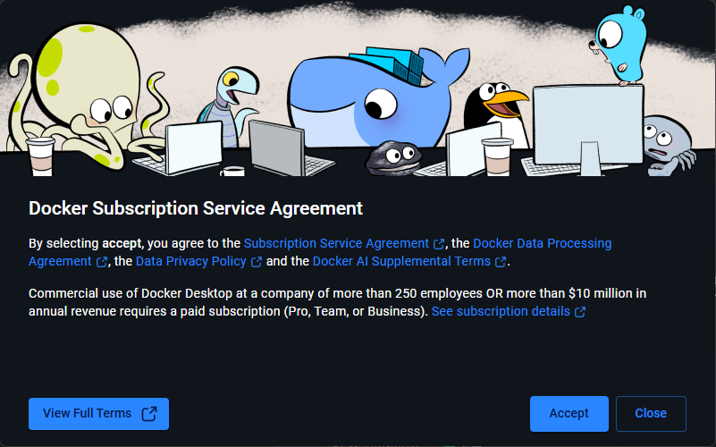
⑤ 로그인은 건너뛰세요Skip the sign-in
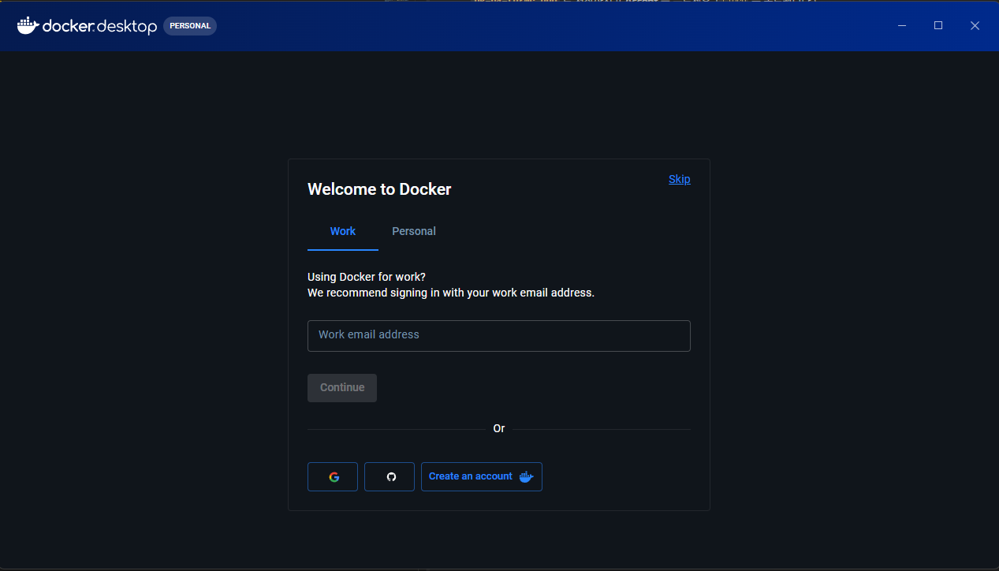
Continue · Google · GitHub 버튼이 크게 보여서 꼭 해야 할 것 같지만,
T³Composer 를 쓰는 데 Docker 계정은 필요 없습니다.
위쪽 Work / Personal 탭도 고를 필요 없습니다.
Skip 다음에 설문 화면이 한 번 더 나오면 그것도 건너뛰시면 됩니다. The input box,
Continue, Google, and GitHub buttons look important, but
you do not need a Docker account to use T³Composer.
You also do not need to pick the Work / Personal tab.
If a survey screen appears after Skip, skip that too.
⑥ 준비 완료 확인Confirm it is ready
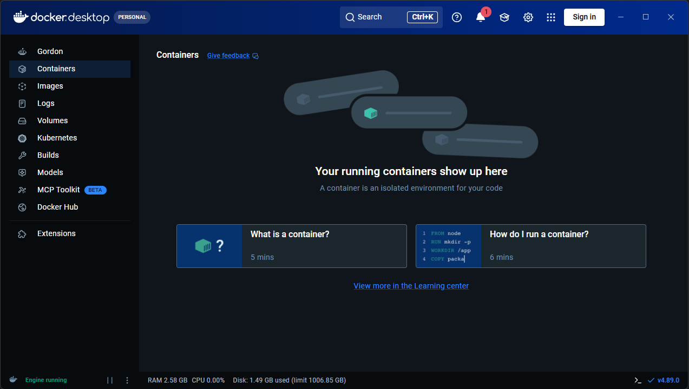
더 많이 표시 를 눌러
개인 네트워크만 체크하면 더 안전합니다. 이 창은 처음 한 번만 나옵니다.
실수로 [취소] 를 눌렀다면 —
Windows 보안 → 방화벽 및 네트워크 보호 → 방화벽을 통해 앱 허용
에서 Docker Desktop Backend 를 찾아 체크하면 됩니다.
Docker needs this so the programs can talk to each other. Click More details
and tick Private networks only for a safer setting. It appears only once.
If you clicked [Cancel] by mistake — go to
Windows Security → Firewall & network protection →
Allow an app through firewall and tick Docker Desktop Backend.
1-4. 소스 내려받기 — 3가지 방법 중 하나 선택Download the source — pick one of three ways
먼저 프로그램 파일을 내 PC 로 복사해 옵니다. 아래 3가지 중 편한 방법 하나만 하시면 됩니다. 결과는 모두 같습니다. First copy the program files to your PC. Choose just one of the three methods below — the result is identical.
클릭만으로 받을 수 있어 가장 쉽습니다. GitHub Desktop 을 설치한 뒤: The easiest option — clicks only. After installing GitHub Desktop:
- 상단 메뉴 File → Clone repository… 클릭 Click File → Clone repository…
- URL 탭 선택Select the URL tab
- 주소 칸에 아래를 붙여넣기Paste this into the URL field
https://github.com/zionex/t3-composer.git - Local path 에 저장할 폴더 지정 (예:
D:\work) Set Local path to a folder (e.g.D:\work)
→ 실제로는D:\work\t3-composer폴더가 만들어집니다. 이 경로를 기억해 두세요. → AD:\work\t3-composerfolder is created. Remember this path. - Clone 버튼 클릭 → 다운로드 완료까지 대기 Click Clone and wait for the download to finish
- 상단 [+ New] → Clone from URL 클릭 Click [+ New] → Clone from URL
- Source Path / URL 에 아래를 붙여넣기
Paste this into Source Path / URL
https://github.com/zionex/t3-composer.git - Destination Path 에 저장할 폴더 지정 (예:
D:\work\t3-composer) Set Destination Path (e.g.D:\work\t3-composer) - Clone 버튼 클릭Click Clone
명령창을 열고 (여는 방법은 1-5 참고) 소스를 저장할 상위 폴더에서 아래 중 하나를 실행합니다. Open a command window (see 1-5) in the parent folder where you want the source, then run one of these.
# HTTPS — 가장 무난 (아이디/토큰으로 인증)— simplest (ID / token auth) git clone https://github.com/zionex/t3-composer.git # SSH — SSH 키를 미리 등록해 둔 분만— only if your SSH key is registered git clone git@github.com:zionex/t3-composer.git # GitHub CLI — gh 를 설치해 둔 분만— only if gh is installed gh repo clone zionex/t3-composer
처음이라면 HTTPS 를 쓰세요. SSH 는 미리 "SSH 키"라는 것을 GitHub 에 등록해 둔 분만 동작합니다. 셋 중 무엇으로 받든 이후 과정은 완전히 동일합니다. If this is your first time, use HTTPS. SSH only works if you have already registered an SSH key on GitHub. Whichever you use, everything afterwards is identical.
1-5. 명령창 열기 — 어디에 명령어를 입력하나요?Opening a command window — where do commands go?
다음 단계부터는 검은 명령창에 명령어를 입력합니다.
가장 중요한 건 "어느 폴더에서" 입력하느냐입니다 —
반드시 방금 내려받은 t3-composer 폴더 안이어야 합니다.
From here on you type commands into a black command window.
What matters most is which folder you are in — it must be
inside the t3-composer folder you just downloaded.
가장 쉬운 방법 — 탐색기에서 바로 열기 (추천)Easiest way — open from File Explorer (recommended)
- 파일 탐색기에서
t3-composer폴더로 들어갑니다 In File Explorer, open thet3-composerfolder
폴더 안에docker-compose.yml파일이 보이면 제대로 찾아온 것입니다. If you seedocker-compose.ymlinside, you are in the right place. - 위쪽 주소 표시줄을 클릭해서 경로가 파랗게 선택되게 합니다 Click the address bar so the path is highlighted
- 거기에
cmd를 입력하고 Enter Typecmdthere and press Enter
→ 그 폴더 위치에서 검은 창이 바로 열립니다. 경로를 따로 입력할 필요가 없어 가장 실수가 적습니다. → A command window opens already in that folder — no path typing, fewest mistakes.
다른 방법들Other ways
| 도구Tool | 여는 방법How to open |
|---|---|
| VS Code | File → Open Folder 로 t3-composer 폴더를 연 뒤,
Ctrl + ` (숫자 1 왼쪽의 백틱 키) 를 누르면 아래쪽에 터미널이 열립니다.
이미 폴더 위치가 잡혀 있어 편합니다.
Use File → Open Folder on t3-composer, then press
Ctrl + ` (backtick, left of the 1 key) to open a terminal already in that folder. |
| PowerShell | 시작 메뉴에서 PowerShell 검색 후 실행 → cd D:\work\t3-composer
처럼 직접 경로 이동이 필요합니다.
Search PowerShell in the Start menu, then you must
navigate manually, e.g. cd D:\work\t3-composer. |
| GitHub Desktop | 메뉴 Repository → Open in Command Prompt 를 누르면 해당 폴더에서 창이 열립니다. Use Repository → Open in Command Prompt to open a window in that folder. |
위치가 맞는지 확인하는 법Checking you are in the right folder
명령창 왼쪽에 현재 폴더 경로가 표시됩니다. 끝이
t3-composer 로 끝나야 정상입니다.
The command window shows the current path on the left. It must end with
t3-composer.
❌ 잘못됨Wrong C:\Users\hong> ← 내 PC 기본 위치, 아직 이동 안 함← default location, not moved yet
잘못된 위치라면 아래처럼 이동하세요 (경로는 본인이 저장한 곳으로). If you are in the wrong place, move like this (use your own path).
cd D:\work\t3-composer
1-6. 프로그램 실행Run the program
t3-composer 폴더에서 명령창이 열려 있다면, 아래를 순서대로 붙여넣습니다.
(검은 창이 낯설어도 괜찮습니다 — 복사·붙여넣기만 하면 됩니다)
With a command window open in t3-composer, paste the following in order.
(The black window may look unfamiliar — copy and paste is all you need.)
# 1) 컨테이너 기동 (백그라운드 실행) — 첫 실행은 5~10분 소요Start containers (background) — first run takes 5–10 min docker compose up -d # 2) 상태 확인 — 아래처럼 나오면 정상Check status — this output means success docker compose ps # composer-backend Up (healthy) # composer-db Up (healthy) # composer-frontend Up # target-mssql Up (healthy) # 3) 브라우저 주소창에 입력Open in your browser # http://localhost:5173
화면으로 따라가기Step by step, on screen
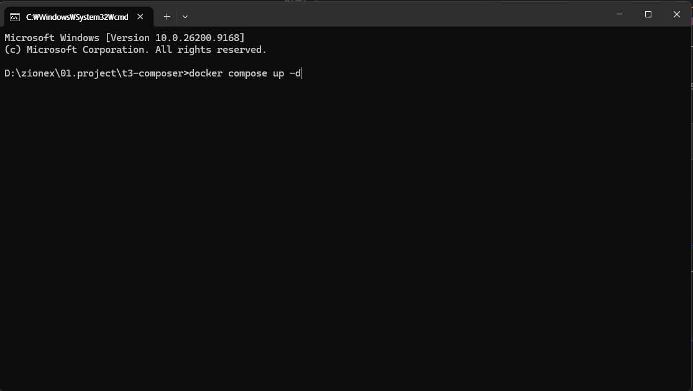
...\t3-composer> 인지 꼭 확인하고 입력하세요
Check that the prompt shows ...\t3-composer> before typing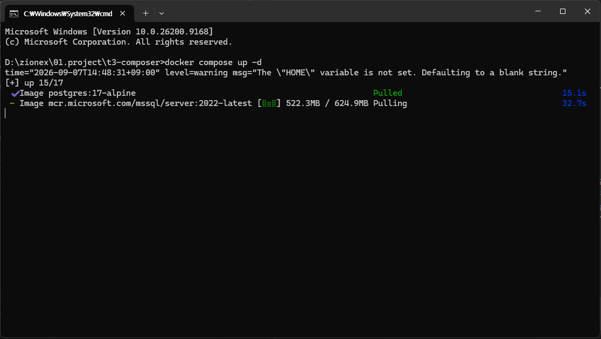
The "HOME" variable is not set 가 보여도 정상입니다.
The yellow The "HOME" variable is not set line is normal.
HOME 은 Mac/Linux 에서 쓰는 이름이라 Windows 에는 없습니다.
프로그램은 대신 Windows 용 이름을 알아서 사용합니다. 그냥 넘어가세요.
HOME is a Mac/Linux name that Windows does not have.
The program automatically uses the Windows equivalent instead. Just ignore it.
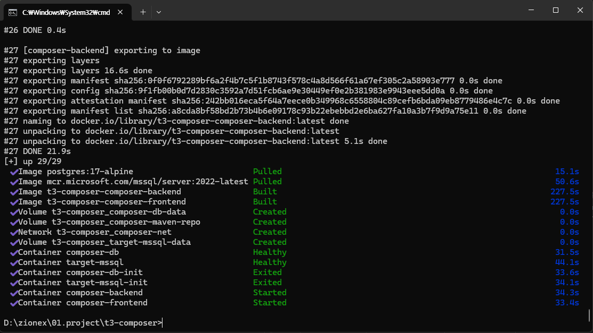
Exited 라고 나왔는데 실패한 건가요? — 아닙니다
It says Exited — did it fail? No.
composer-db-init 과 target-mssql-init 두 개는
데이터베이스 초기 준비만 하고 스스로 끝나는 프로그램입니다.
할 일을 마치고 종료된 것이라 Exited 가 정상입니다 — 앞에 ✔ 가 붙어 있죠.
나머지 4개가
Healthy · Started 면 성공입니다.
composer-db-init and target-mssql-init are
one-shot programs that prepare the database and then stop on their own.
Exited means they finished their job — note the ✔ in front.
If the other four say
Healthy or Started, you are good.
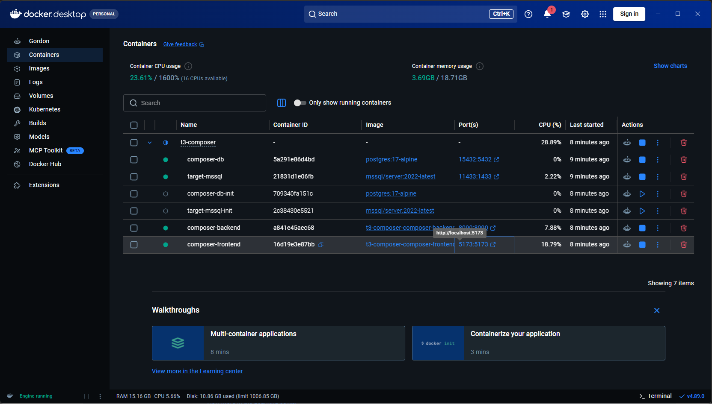
t3-composer 왼쪽 > 를 눌러 펼친 모습 —
초록 4개 + 회색 2개(정상)
Expanded with the > next to t3-composer —
four green + two grey (normal)-init)는 일을 마치고 꺼진 것이라 그대로 두세요 —
▶ 를 눌러 다시 켤 필요가 없습니다.
🟢 green = running · ⚪ grey = stopped.
The two grey ones (-init) finished and shut down — leave them alone;
there is no need to press ▶.
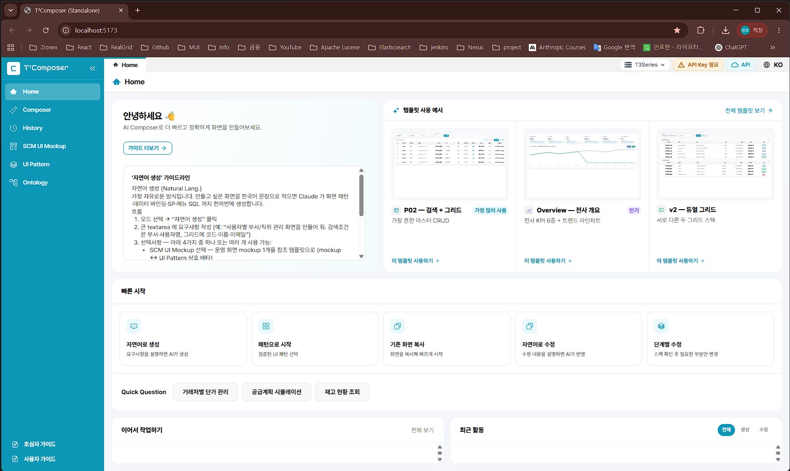
composer-frontend 줄의 5173:5173 을 클릭하면 브라우저가 바로 열립니다 —
주소를 외울 필요가 없습니다
Click 5173:5173 on the composer-frontend row to open the browser —
no need to memorise the address5173 · 8090 · 11433 · 15432 번호가 이미 다른 프로그램에서 쓰이고 있다는 뜻입니다.
대부분 기존에 켜둔 프로그램을 끄면 해결됩니다. 계속 충돌하면
docker-compose.yml 파일을 열어 그 번호만 다른 숫자로
(예: 5173 → 5174) 바꾸고 다시 실행하세요.
It means ports 5173 · 8090 · 11433 · 15432 are already in use.
Usually closing the other program fixes it. If it keeps happening, open
docker-compose.yml and change just that number
(e.g. 5173 → 5174), then run again.
1-7. Docker Desktop 사용법 — 매일 쓰는 4가지Using Docker Desktop — the four everyday actions
설치가 끝나면 명령창은 더 이상 필요 없습니다. 끄고 켜고 확인하는 일은 전부 Docker Desktop 화면에서 클릭으로 합니다. Once installed you no longer need the command window. Starting, stopping, and checking are all done by clicking in Docker Desktop.
docker compose up -d 는 처음 한 번만 치면 됩니다.
다음부터는 PC 를 켜고 Docker Desktop 이 실행되면 자동으로 다시 올라옵니다.
단, 내가 직접 ■ 로 멈춘 경우에는 다시 ▶ 를 눌러 켜야 합니다. You only type
docker compose up -d once.
After that, everything comes back automatically when Docker Desktop starts.
Except when you stopped it yourself with ■ — then press ▶ to start it again.
① 끄기 · 켜기Stop and start
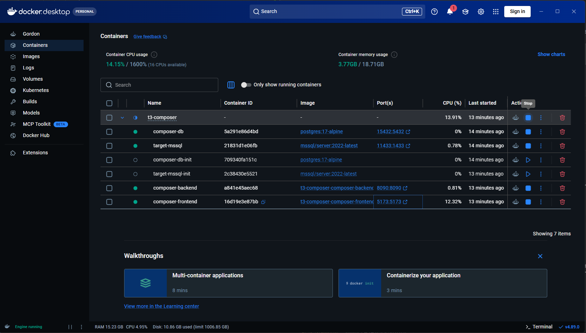
t3-composer 줄의 ■ 를 누르면 6개가 한 번에 꺼집니다
(다시 켤 땐 같은 자리의 ▶)
The ■ on the top t3-composer row stops all six at once
(press ▶ in the same spot to start again)② 다시 시작 — 뭔가 이상할 때 첫 번째로Restart — try this first when something is off
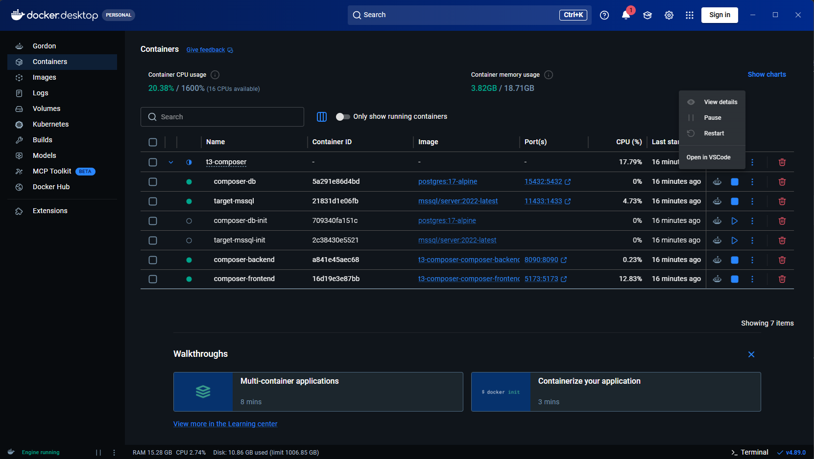
Pause 는 누르지 마세요.Do not use Pause.
Pause 는 "잠깐 얼려두기" 라서 화면상으로는 켜져 있는데 실제로는 응답하지 않습니다.
원인을 찾기 어려워지니, 끌 땐 ■ (Stop), 이상하면 ↺ (Restart) 두 개만 쓰세요.
Pause "freezes" the program, so it looks running but does not respond —
which makes problems hard to diagnose. Stick to ■ (Stop) to turn off and ↺ (Restart) when something is odd.
③ 기록(로그) 보기 — 오류 원인 찾기Reading the logs — finding the cause of an error
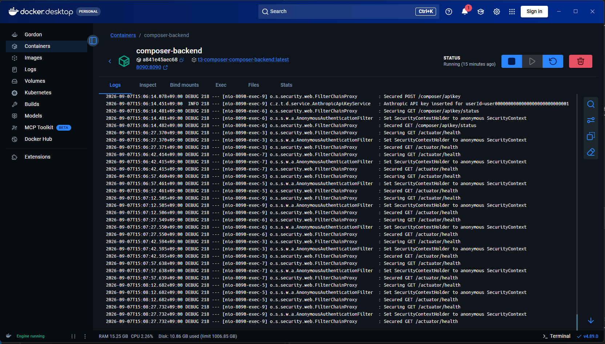
/actuator/health 는 Docker 가 15초마다 "잘 살아있니?" 하고 확인하는 신호입니다.
이 줄이 계속 나오는 게 오히려 정상이라는 뜻이에요.
문제를 찾을 땐 오른쪽 🔍 를 눌러
ERROR 또는 Exception 을 검색하세요.
/actuator/health is Docker asking "are you alive?" every 15 seconds.
Seeing it repeat actually means things are fine.
To find a problem, click 🔍 on the right and search for
ERROR or Exception.
④ Volumes — 내 작업 내용이 저장되는 곳Volumes — where your work is kept
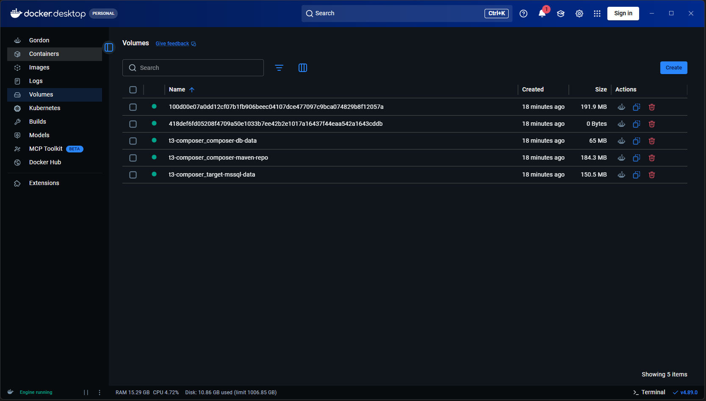
평소에는 이 화면을 열어볼 일이 없습니다. 구경만 하고 지우지 마세요. (완전히 처음부터 다시 설치할 때만 지웁니다.) If a container is the "program", a volume is the data that program saved — your API key, Target DB settings, and every session you have created.
You will rarely need this screen. Look, but do not delete. (Only delete when you want a completely fresh install.)
1-8. 첫 설정 — 화면 안에서 두 가지 입력First-time setup — two entries inside the app
접속에 성공하면 마지막으로 두 가지를 프로그램 화면 안에서 입력합니다. 둘 다 한 번만 입력하면 계속 저장됩니다. Once the app opens, two settings remain. Both are entered once and stay saved.
두 설정은 화면 맨 위 오른쪽 끝, 언어 선택(🌐 KO) 바로 왼쪽에 나란히 있습니다. 어느 메뉴에 있든 항상 같은 자리에 보이므로, 필요할 때 언제든 클릭하면 됩니다. Both sit at the top-right of the screen, immediately left of the language switch (🌐 KO). They stay in the same place on every menu, so you can click them any time.
🌐 KO 왼쪽에 칩 3개가 있습니다.② Target DB → 🗄 T3Series ⌄ 클릭
① API 키 → 🔑 API Key 클릭
☁ API 칩은 현재 AI 연결 방식 표시용 — 누를 필요 없습니다. ↑ Three chips sit at the top-right, left of the
🌐 KO language switch.② Target DB → click 🗄 T3Series ⌄
① API key → click 🔑 API Key
The ☁ API chip only shows the current AI connection mode — no need to click it.
· 🔑 API Key 초록Green = 등록 완료registered / ⚠ API Key 주황Amber = 아직 등록 전not registered yet
① Anthropic API 키 등록Register the Anthropic API key
맨 위 오른쪽 API Key 칩(언어 선택 왼쪽)을 클릭하면 입력창이 열립니다. Click the API Key chip at the top-right (left of the language switch).
- ⚠ API Key 주황색이면 아직 등록 전 → 클릭해서 키를 붙여넣고 [저장] Amber means not registered — click, paste the key, and [Save]
- 저장하면 자동으로 검증한 뒤After saving it is validated and turns 🔑 API Key 초록색으로 바뀝니다green
- "설명" 칸은 비워도 되고,
Personal key처럼 메모용으로 적어도 됩니다 The description field is optional — a note likePersonal keyis fine
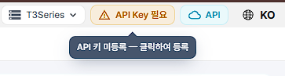
API Key 필요
Before — amber API Key Required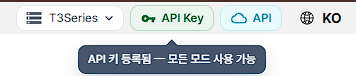
API Key
After — green API Key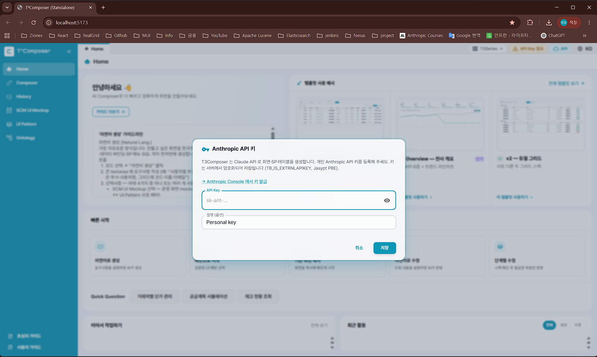
입력창 오른쪽 👁 는 방금 붙여넣은 키를 확인할 때만 쓰고, 다른 사람이 보는 화면에서는 누르지 마세요. Once saved, the key is never shown again. You may need it later or on another PC, so store the original safely.
The 👁 in the field is only for checking what you just pasted — do not press it while others can see your screen.
② Target DB 연결Connect the Target DB
어느 프로젝트의 데이터를 쓸지 연결하는 설정입니다 (Target 개념은 2장에서 설명). 여기는 두 번 클릭해야 창이 열립니다. This selects which project's data you use (Target is explained in Chapter 2). It takes two clicks to open.
- 맨 위 오른쪽Click the 🗄 T3Series ⌄ 칩을 클릭 → Target 목록이 아래로 펼쳐집니다 chip at the top-right → a Target list drops down
- 목록에서 사용할 Target 줄의 오른쪽 🗄️ 아이콘을 클릭
Click the 🗄️ icon on the right of the Target row you want
→ 아이콘이 파란색이면 이미 설정된 상태, 회색이면 아직 미설정입니다. (옆의 📷 아이콘은 다른 기능이니 누르지 마세요) → Blue means already configured; grey means not yet. (The 📷 icon next to it is a different feature — do not click it.)
그러면 아래 창이 열립니다.This dialog then opens.
각 칸에 무엇을 넣나요?What goes in each field?
| 항목Field | 설명Description |
|---|---|
| JDBC URL | 접속할 DB 주소입니다. <host> 자리에 서버 주소,
databaseName= 뒤에 DB 이름을 넣습니다.
※ 주소 안의 숫자( 21433 등)는
프로젝트마다 다른 포트 번호입니다 — 1-6 의 설치용 번호와 달라도 정상이며,
프로젝트에서 쓰던 값을 그대로 넣으면 됩니다.
The database address. Put the server address where
<host> is, and the database name after databaseName=.
뒤쪽 encrypt=true;trustServerCertificate=true 는 지우지 마세요 —
빠지면 연결이 거부됩니다.
Do not delete the trailing
encrypt=true;trustServerCertificate=true — without it the connection is refused. |
| Username / Password | DB 계정과 비밀번호입니다.The database account and password. |
| Driver Class | 선택 항목 — 기본값이 이미 채워져 있으니 그대로 두시면 됩니다. Optional — the default is already filled in; leave it as is. |
| source 폴더 경로source folder path | 기존 화면을 복사·수정할 때 참고할 원본 소스 위치입니다. 신규 화면만 만들 거라면 비워도 됩니다. Where the original source lives, used when copying or modifying existing screens. Leave blank if you only build new screens. |
| backend 폴더 경로backend folder path | 선택 항목 — 프론트와 백엔드가 따로 있는 프로젝트만 입력. 비우면 위 source 경로와 같은 것으로 처리됩니다. Optional — only for projects where frontend and backend are separate. Blank means the same as the source path above. |
- 입력값(서버 주소·계정·비밀번호)은 담당하시는 프로젝트의 DB 접속 정보입니다 — 평소 그 프로젝트에서 사용하는 접속 정보를 그대로 입력하면 됩니다 These values are simply your project's own database credentials — enter the same connection details you normally use for that project
- 입력 후 [▶ 연결 테스트] 를 눌러 초록색 성공 메시지를 확인한 뒤 [💾 저장] 을 누르세요 Click [▶ Test connection], confirm the green success message, then [💾 Save]
- 비워두면 연습용 샘플 데이터로 동작합니다 (실제 업무 데이터는 안 보임) If left blank it runs on practice sample data (no real business data)
encrypt=true;trustServerCertificate=true 가 빠진 경우입니다.
두 가지를 다시 확인한 뒤 재시도해 보세요.
Usually a typo in the address or account, or the missing
encrypt=true;trustServerCertificate=true at the end of the JDBC URL.
Check both and try again.
2 T³Composer가 뭔가요?What is T³Composer?
한 줄로 말하면In one sentence
말로 설명하면 화면을 대신 만들어주는 프로그램A program that builds screens for you, from a plain description입니다.
지금까지는 "이런 화면이 필요합니다" 라고 문서를 써서 개발팀에 전달하고, 개발자가 그 문서를 보고 코드를 작성했습니다. 이 과정은 보통 며칠씩 걸렸습니다. Until now you wrote a document saying "we need a screen like this", handed it to a development team, and a developer turned it into code — typically taking days.
T³Composer 는 그 중간 과정을 줄여줍니다. 문서 대신 채팅창에 요구사항을 입력하면, AI(인공지능)가 문서화·화면 설계·코드 작성까지 대신 진행합니다. T³Composer removes the middle steps. Type the requirement into a chat box instead of a document, and the AI handles the specification, screen design, and code.
비유로 이해하기Everyday analogies
| 비유Term | 설명Think of it as |
|---|---|
| 화면Screen | 엑셀 시트 한 장이라고 생각하세요. 조회 조건(검색창)이 있고, 아래 표(그리드)가 있는 형태가 대부분입니다. One Excel sheet — usually a search area on top and a table (grid) below. |
| 테이블Table | 화면에 표시되는 데이터가 저장된 엑셀 파일이라고 생각하세요. "사용자 목록"을 보여주려면 "사용자 정보가 저장된 테이블"을 연결해야 합니다. The Excel file where the data lives. To show a "user list" you connect the table that stores user data. |
| Target | "어느 회사(프로젝트)의 화면을 만들 것인가" 를 고르는 라벨입니다. 회사마다 사용하는 데이터베이스·화면 부품이 달라서, 시작 전에 먼저 골라야 합니다. A label for "which company/project am I building for". Each one uses a different database and UI components, so you pick it before you start. |
| 메뉴 등록Menu registration | 만든 화면을 실제 프로그램의 메뉴 목록에 추가하는 것 — 새 엑셀 파일을 즐겨찾기에 등록하는 것과 비슷합니다. Adding your screen to the real menu list — like bookmarking a new Excel file. |
| 산출물(코드)Artifacts (code) | AI가 만들어낸 화면 파일들의 모음. 눈으로 보는 화면 1개를 만들려면 실제로는 여러 개의 파일이 함께 필요합니다. The set of files the AI produced. One visible screen actually needs several files together. |
할 수 있는 것 / 아직 못 하는 것What it can and cannot do
| ✅ 할 수 있는 것Can do | ⚠️ 아직 어려운 것Still hard |
|---|---|
| 검색 조건 + 표(그리드) 형태의 조회 화면Search + grid inquiry screens | 3D 그래픽, 복잡한 애니메이션3D graphics, complex animation |
| 등록·수정·삭제(CRUD)가 되는 관리 화면Management screens with create/update/delete | 매우 독특한 디자인의 화면Highly unusual custom designs |
| 기존 화면과 비슷한 새 화면 (복사 후 일부만 변경)New screens similar to existing ones (copy then tweak) | 새로운 업무 로직을 처음부터 설계하는 것Designing brand-new business logic from scratch |
| KPI 카드·차트가 있는 대시보드Dashboards with KPI cards and charts | 여러 화면이 서로 연동되는 복잡한 흐름Complex flows linking several screens together |
3 5분 안에 첫 화면 만들어보기Your First Screen in 5 Minutes
지금 바로 따라 해볼 수 있는 가장 쉬운 시나리오입니다. 실제로 데이터가 저장되지는 않으니 편하게 눌러보세요. The simplest walkthrough you can follow right now. Nothing is saved for real, so click freely.
3-1. 처음 화면 (Home)The Home screen
프로그램을 열면 아래와 같은 화면이 나옵니다. Opening the program shows this.
만들기Build with
plain language
시작하기Start from
a pattern
해서 시작Copy an
existing screen
수정Modify with
plain language
수정Step-by-step
modify
왼쪽 세로 줄이 메뉴입니다 (4장에서 자세히 설명). 가운데 5개 카드가 빠른 시작 버튼입니다. 오늘은 첫 번째 카드 "자연어로 만들기"를 눌러보겠습니다. The vertical strip on the left is the menu (Chapter 4). The five cards in the middle are quick-start buttons. Today we use the first one, "Build with plain language".
3-2. "자연어로 만들기" 클릭 → 모듈 선택Click "Build with plain language" → pick a module
"자연어" 란 우리가 평소 쓰는 말 그대로를 뜻합니다 (프로그래밍 언어가 아니라는 뜻). 버튼을 누르면 먼저 모듈을 고르는 화면이 나옵니다. "Plain language" simply means ordinary words, not a programming language. The first thing you see is a module picker.
DP 서랍, "품목 마스터 화면"은 CM 서랍에 들어갑니다.
고르기만 하면 그 업무에 맞는 규칙과 자주 쓰는 데이터를 AI가 알아서 참고합니다. — Think of it as a drawer per business area. A demand-planning screen goes in the
DP drawer; an item-master screen goes in CM.
Just pick one and the AI automatically applies that area's rules and common data.
| 모듈Module | 이런 화면일 때Use it when | 예시Example |
|---|---|---|
| CM 공통 마스터Common Master | 품목·창고·거래처 등 기준정보Master data: items, warehouses, partners | 품목 마스터 관리Item master management |
| DP 수요 계획Demand Plan | 수요 예측·계획 입력Demand forecasting and plan entry | 월별 수요 계획 입력Monthly demand plan entry |
| MP 마스터 계획Master Plan | 생산·자원 계획Production and resource planning | 자원 가동 현황Resource utilization |
| IM 재고 관리Inventory | 재고 정책·안전재고Inventory policy and safety stock | 안전재고 정책 관리Safety stock policy |
| AD 시스템·관리System / Admin | 사용자·권한·메뉴 등 관리 화면Users, permissions, menus | 사용자 관리User management |
| UT 유틸리티Utility | 공지·이슈·대시보드 등 부가 기능Notices, issues, dashboards | 공지사항 관리Notice management |
CM(공통 마스터) 또는 UT(유틸리티)가 무난합니다.
Pick the closest match. You can change it any time from [Change module] on the
next screen. For practice, CM or UT are safe choices.
3-3. 요구사항 입력 화면 살펴보기A tour of the request screen
모듈을 고르면 아래 화면이 나옵니다. ✅ 표시된 두 곳만 신경 쓰면 되고, 나머지는 비워둬도 됩니다. After choosing a module you see this. Only the two ✅ items matter — the rest can stay empty.
💡 참조 파일은 아래 "참조 파일 첨부" 영역에 끌어다 놓으세요 e.g. Item master management — search + single grid
💡 Drag reference files into the "Attach files" area below
| 영역Area | 꼭 해야 하나요?Is it required? |
|---|---|
| 요구사항 입력창Requirement box | ✅ 필수Required — 만들고 싶은 화면을 말로 적는 곳 (3-4 참고) — describe the screen you want (see 3-4) |
| AI 엔진AI engine | 기본값 Opus 그대로 두면 됩니다. Leave the default Opus as is. Opus = 고품질(조금 느림) · Sonnet = 빠름. 복잡한 화면일수록 Opus 가 유리합니다. Opus = higher quality (slightly slower); Sonnet = faster. The more complex the screen, the more Opus helps. |
| SCM UI Mockup / UI Pattern | 선택 — "이런 느낌으로" 참고 화면을 지정할 때만 (둘 중 하나만) Optional — only to point at a reference screen (choose one) |
| 참조 파일 첨부Attach files | 선택 — 설계서 이미지·SQL 파일이 있을 때만 Optional — only if you have design images or SQL files |
| Data Source | 선택 — 쓸 테이블을 직접 지정하고 싶을 때만 (안 골라도 AI가 찾습니다) Optional — only to pin specific tables (the AI finds them otherwise) |
| [Claude 에게 생성 요청Ask Claude to generate] | ✅ 마지막에 클릭Click last — 여기서 생성이 시작됩니다— this starts generation |
3-4. 요구사항 입력해보기Write your requirement
아래처럼 평소 회의에서 말하듯이 적으면 됩니다. 표 이름·컬럼 이름 같은 걸 몰라도 괜찮습니다 (모르면 AI가 물어보거나, 비슷한 이름으로 추측한 뒤 화면에 표시해줍니다). Write it the way you would say it in a meeting. You do not need table or column names — the AI will ask, or infer sensible ones and show them to you.
"사용자 목록을 보여주는 화면을 만들어줘. 이름과 부서로 검색할 수 있고, 목록에서 사용자를 추가·수정·삭제할 수 있으면 좋겠어." "Build a screen that shows a list of users. I want to search by name and department, and be able to add, edit, and delete users from the list."
[✨ Claude 에게 생성 요청] 버튼을 누르면 AI가 화면을 만들기 시작합니다. 화면 오른쪽에 진행 상황이 표시되고, 보통 수십 초~몇 분 정도 걸립니다. Click [✨ Ask Claude to generate] and generation begins. Progress appears on the right; it usually takes from tens of seconds to a few minutes.
3-5. 작업 화면 둘러보기 — 채팅창은 여기 있습니다A tour of the workspace — this is where the chat lives
생성 요청을 누르면 작업 화면으로 넘어갑니다. 처음에는 복잡해 보이지만 크게 세 부분뿐입니다. After you click generate, you land in the workspace. It looks busy at first, but there are only three areas.
여기에 만들어진 화면이 나타납니다 Click [Run preview] and
the generated screen appears here
| 위치Area | 무엇을 하는 곳인가요?What it is for |
|---|---|
| 📁 왼쪽 위 — 산출물Top-left — Artifacts | AI가 만든 파일 목록입니다. 화면 1개에 파일 여러 개가 만들어집니다. 눌러보지 않아도 됩니다 — 개발자가 나중에 확인하는 영역입니다. The list of files the AI produced — one screen creates several files. You do not need to open them; this is for developers to review later. |
| 💬 왼쪽 아래 — 작업 내역 (채팅창)Bottom-left — Activity (chat) | ★ 가장 많이 쓰는 곳입니다.★ You will use this the most. 지금까지 주고받은 대화가 쌓이고, 맨 아래 입력칸에 수정 요청을 계속 이어서 적을 수 있습니다. 이 가이드에서 "채팅창에 입력하세요" 라고 하는 곳이 바로 여기입니다. Your conversation collects here, and the box at the bottom lets you keep asking for changes. Whenever this guide says "type in the chat", this is the place. |
| 🖥 오른쪽 — 실행 화면 / 산출물 소스Right — Preview / Source | 실행 화면 탭에 만들어진 화면이 표시됩니다 (초심자는 이 탭만 보면 됩니다). 산출물 소스 탭은 코드를 보는 곳이라 안 봐도 괜찮습니다. The Preview tab shows the generated screen (the only tab you need). The Source tab shows code — safe to ignore. |
| 위쪽 버튼들Top buttons | [▶ 화면 실행] 미리보기 · [① 메뉴 등록] [② 산출물 실행] 실제 반영 (6장) · [처음부터 다시] 새로 시작 (이전 작업은 History 에 남습니다) [▶ Run preview] · [① Register] [② Apply] for the real system (Chapter 6) · [Start over] to begin again (past work stays in History) |
· Ctrl + Enter 로 전송됩니다 (Enter 만 누르면 줄바꿈) Send with Ctrl + Enter (Enter alone inserts a line break)
· 이전 대화 내용이 그대로 이어지므로 "아까 그 화면에서 ~~ 바꿔줘" 처럼 말해도 통합니다 The conversation carries over, so "change that screen we just made" works fine
· 한 번에 하나씩 요청하면 결과가 더 안정적입니다 (10장 참고) One request at a time gives steadier results (Chapter 8)
3-6. 결과 확인하기 (미리보기)Check the result (preview)
작업이 끝나면 화면 상단에 다음과 같은 버튼들이 나타납니다. When it finishes, these buttons appear at the top.
- [화면 실행]을 눌러보세요. 오른쪽에 방금 설명한 화면이 실제로 어떻게
생겼는지 나타납니다.
Click [Run preview]. The screen you described appears on the right.
- 이 단계는 미리보기입니다. 실제 데이터베이스에 아무 것도 저장되지 않으니 안심하고 눌러보세요. This is only a preview — nothing is written to the real database.
- 화면에 가짜(샘플) 데이터가 채워져서, 진짜처럼 움직이는 걸 확인할 수 있습니다. Sample data fills the screen so you can see it behave realistically.
- 마음에 안 들면 채팅창에 "검색 조건에 입사일도 추가해줘" 처럼 계속 대화하듯이 수정 요청을 하면 됩니다. If something is off, just keep chatting — e.g. "also add a hire-date filter".
- 여기서 멈춰도 됩니다. 진짜로 회사 시스템에 반영하려면 "메뉴 등록 → 산출물 실행" 단계가 더 필요합니다 (6장에서 설명). You can stop here. Applying it to the real system needs the "Register menu → Apply artifacts" steps (Chapter 6).
4 왼쪽 메뉴 둘러보기Sidebar Menu Tour
화면 왼쪽에 세로로 있는 메뉴들입니다. 각각 어떤 역할인지 간단히 소개합니다. A quick tour of the vertical menu on the left.
| 메뉴Menu | 이런 분들이 씁니다Use it when |
|---|---|
| Home | 첫 진입 시 열리는 시작 화면. 매번 여기서 출발하면 됩니다. The landing page — start here every time. |
| Composer | 메인 기능 — 실제로 화면을 새로 만들거나 기존 화면을 고칠 때. The main feature — build new screens or modify existing ones. |
| History | "어제 만들던 화면 이어서 하고 싶은데?" 할 때 — 이전 작업을 다시 열어 이어서 진행. "I want to continue yesterday's screen" — reopen and resume past work. |
| SCM UI Mockup | 181개 운영 화면 예시 갤러리. "이런 느낌으로 만들어줘" 하고 참고 화면을 보여주고 싶을 때. A gallery of 181 example screens — to say "make it look like this". |
| UI Pattern | T3MES 퍼블리싱 730개 화면 패턴 카탈로그. 실제 운영 중인 비슷한 화면을 참고하고 싶을 때. A catalog of 730 T3MES screen patterns for referencing real screens. |
| Ontology | Q&A · Entity · View · Process 4영역 업무 용어 사전. A business dictionary across Q&A, Entity, View, and Process. (처음에는 몰라도 됩니다 — 익숙해진 뒤 살펴보세요) (You can ignore this at first.) |
· Dashboard 메뉴가 안 보여도 정상입니다 — 별도 설정을 켠 환경에서만 나타납니다. It is normal not to see a Dashboard menu — it appears only where enabled.
· 사이드바가 좁게 느껴지면 접기 버튼으로 아이콘만 남길 수 있습니다 (아이콘에 마우스를 올리면 이름이 표시됩니다). You can collapse the sidebar to icons only; hover an icon to see its name.
5 Composer 메뉴 자세히 알아보기Composer Menu in Detail
Composer 메뉴를 누르면 두 가지 큰 갈래로 나뉩니다.
The Composer menu splits into two branches.
5-1. 신규 개발 — 새 화면을 만들 때New development — building a new screen
| 방식Method | 언제 쓰나요?When to use | 쉬운 설명In plain terms |
|---|---|---|
| 💬 자연어 생성Plain-language build | 가장 쉽고 빠른 방법. 처음이라면 이것부터Easiest and fastest — start here | 3장에서 해본 것처럼 채팅으로 요구사항을 설명하면 AI가 알아서 화면 구조·데이터를 정합니다. Describe it in chat as in Chapter 3; the AI decides the structure and data. |
| 🧩 단계별 생성 (Beta)Step-by-step build (Beta) | 화면 배치(레이아웃)를 내가 직접 정하고 싶을 때When you want to control the layout yourself | 화면을 어떻게 나눌지(위/아래, 좌/우) 마우스로 직접 배치한 뒤, 각 영역에 필요한 데이터를 입력합니다. 원하는 모양을 더 정확하게 만들 수 있습니다. Arrange the split (top/bottom, left/right) with the mouse, then fill in the data for each area — more precise control. |
| 📋 기존 화면 복사Copy existing screen | "저 화면이랑 거의 똑같은데 몇 개만 다른 화면" 이 필요할 때When you need "almost the same as that screen, with a few changes" | 이미 있는 화면을 하나 고르면 그 구조를 그대로 복사해오고, 달라지는 부분만 대화로 알려주면 됩니다. Pick an existing screen to copy its structure, then describe only what changes. |
5-2. 기존 화면 수정 — 이미 있는 화면을 고칠 때Modify existing — changing a screen you already have
| 방식Method | 언제 쓰나요?When to use | 쉬운 설명In plain terms |
|---|---|---|
| 💬 자연어 수정Plain-language modify | 빠르게 몇 군데만 손보고 싶을 때For quick fixes in a few places | 고치고 싶은 화면을 목록에서 고른 뒤, "검색 조건에 상태값도 추가해줘" 처럼 말로 요청합니다. Pick the screen from a list, then ask in words — e.g. "also add a status filter". |
| ☑ 단계별 수정Step-by-step modify | 여러 곳을 체계적으로 바꾸고 싶을 때For systematic changes across several areas | 화면을 구성요소별로 쪼개서 보여주고, 바꾸고 싶은 부분만 체크해서 수정합니다. The screen is broken into components so you tick only what you want changed. |
5-3. 화면 만들 때 물어보는 것들 (선택사항)Optional inputs when building
자연어 생성 화면에는 아래와 같은 "선택사항" 들이 있습니다. 몰라도 그냥 넘어가도 됩니다 — 없어도 AI가 알아서 만들어줍니다. 다만 있으면 더 정확한 결과가 나옵니다. The build screen offers these optional inputs. You can safely skip all of them — the AI works without them — but they improve accuracy.
| 선택사항Option | 언제 쓰면 좋은가요?When it helps |
|---|---|
| SCM UI Mockup | "4장의 Mockup 갤러리에서 본 그 느낌으로 만들어줘" 라고 콕 집어 알려주고 싶을 때 To point at a specific example from the Mockup gallery (Chapter 4) |
| UI Pattern | 실제 운영 화면 중 하나를 콕 집어 "이거랑 비슷하게" 라고 알려주고 싶을 때 To say "make it like this one" about a real production screen |
| 참조 파일 첨부Attach files | 화면 설계서 이미지, 참고할 SQL 파일 등을 파일로 가지고 있을 때 (끌어다 놓기 가능, 최대 5개) When you have design images or SQL files (drag and drop, up to 5) |
| Data Source | (다소 전문적) 사용할 데이터베이스 테이블을 직접 화면에서 찾아 지정하고 싶을 때 (More advanced) to browse and pin the exact database tables to use |
6 화면을 만든 뒤 할 일 — 확인하고 등록하기After Building — Verify and Register
AI가 화면을 만들어주면, 그것으로 끝이 아닙니다. 실제 회사 시스템에 반영되려면 순서대로 아래 3단계를 거칩니다. Generation is not the end. To reach the real system, three steps follow in order.
안전 · 몇 번을 눌러도 OK "Let's see how it looks"
Safe — click as often as you like
되돌리기 어려움 Adds to the real menu
Hard to undo
신중하게 진행 Writes real files and DB
Proceed carefully
① 화면 실행 (미리보기) — 안심하고 눌러도 됩니다Run preview — completely safe
- 3장에서 해본 그 버튼입니다.The same button you used in Chapter 3.
- 화면이 실제로 어떻게 보이는지, 버튼을 눌렀을 때 어떻게 동작하는지 가짜 데이터로 확인합니다. See how it looks and behaves, using sample data.
- 몇 번을 눌러도, 잘못 눌러도 문제가 생기지 않습니다. Nothing breaks no matter how often you click.
② 메뉴 등록 — 여기부터는 실제 반영Register menu — this one is real
- 만든 화면을 프로그램의 진짜 메뉴 목록에 추가하는 단계입니다. This adds your screen to the actual menu list.
- 등록하면 실제 메뉴에 나타나므로, ①에서 미리보기로 결과를 충분히 확인한 뒤 누르세요. Because it becomes visible in the real menu, review the preview from step ① thoroughly first.
· 미리보기 화면이 원하는 모양대로 나왔는가?Does the preview match what you wanted?
· 검색 조건·목록 컬럼이 빠짐없이 들어갔는가?Are all filters and list columns present?
· 메뉴 이름(화면 제목)이 알맞게 정해졌는가?Is the menu name (screen title) right?
→ 셋 다 OK 면 눌러도 됩니다. 아니면 채팅으로 먼저 수정하세요. → All three OK? Go ahead. Otherwise fix it in chat first.
③ 산출물 실행 — 실제 반영Apply artifacts — the real write
- 화면을 이루는 실제 파일들과 데이터베이스 설정을 진짜로 적용하는 단계입니다. This actually writes the screen's files and database objects.
- 메뉴 등록 다음 순서로 진행하는 것이 안전합니다. It is safest to run this after menu registration.
7 Target 바꾸기 — 다른 프로젝트 화면 만들기 Switching Target — Building for Another Project
지금까지 만든 화면은 하나의 프로젝트(Target) 를 기준으로 만들어졌습니다. 다른 프로젝트의 화면을 만들어야 한다면 여기를 바꾸면 됩니다. Everything you built so far targeted one project (Target). To build for a different project, switch it here.
회사에서 여러 프로젝트를 담당한다면, Target 을 바꿔가며 각각의 화면을 만들 수 있습니다. If you work on several projects, you can switch Target and build screens for each one.
· 보이는 메뉴 목록 — 그 프로젝트의 실제 메뉴를 가져옵니다 The menu list — real menus from that project are loaded
· 사용하는 데이터 — 그 프로젝트의 테이블·데이터를 봅니다 The data — you see that project's tables and data
· 만들어지는 화면 스타일 — 프로젝트마다 쓰는 화면 부품이 달라서 결과물 모양도 달라집니다 The generated style — each project uses different UI components, so results differ
| 궁금한 점Question | 답Answer |
|---|---|
| 바꾸면 지금 작업이 사라지나요?Do I lose my current work? | 아니요. 지금까지 작업은 History 에 그대로 남습니다. No — everything stays in History. |
| 다음에 열면 초기화되나요?Does it reset next time? | 아니요. 마지막에 고른 Target 이 그대로 기억됩니다. No — the last Target you chose is remembered. |
| 프로젝트마다 DB 를 따로 넣어야 하나요?Do I set the DB for each project? | 네. Target 별로 한 번씩 입력하면 각각 따로 저장됩니다 (1-8 참고). Yes — enter it once per Target; each is saved separately (see 1-8). |
8 API 키 바꾸기 / 다시 등록하기 Changing or Re-registering the API Key
1-8 에서 처음 등록한 API 키를 나중에 바꾸는 방법입니다. 새 PC 에서 다시 시작할 때도 같은 자리에서 입력하면 됩니다. How to change the API key you first registered in 1-8. Use the same place when starting again on a new PC.
키가 만료됐거나 다른 키로 바꾸고 싶을 때는 같은 자리에서 다시 등록하면 됩니다. If the key expired or you want to use a different one, just register again in the same place.
- 화면 오른쪽 위Click the 🔑 API Key 칩을 클릭chip at the top right
- 새 키를 붙여넣고 [저장] — 이전 키는 자동으로 교체됩니다 Paste the new key and click [Save] — the old one is replaced
· 칩이 갑자기 주황색으로 바뀌었을 때 the chip suddenly turns amber
· 생성 요청을 눌렀는데 "인증" 관련 오류가 날 때 you get an authentication-style error when generating
· 회사 키가 갱신됐다고 안내받았을 때 you are told the company key was renewed
9 오류가 나면 어떻게 하나요?What If an Error Appears?
"빨간 글씨"나 오류 메시지가 뜨면?When you see red text or an error
당황하지 않아도 됩니다. 화면 실행 버튼 근처에 있는 "오류 시 자동보완" 체크박스를 켜두면, AI가 스스로 오류 원인을 찾아 화면을 고친 뒤 다시 실행해 봅니다. No need to panic. Tick "Auto-fix on error" next to the preview button and the AI will diagnose the cause, fix the screen, and re-run it by itself.
- 자동으로 고쳐지면 별다른 조치가 필요 없습니다. If it fixes itself, there is nothing more to do.
- 몇 번을 시도해도 안 고쳐지면, "여기서부터는 사람이 봐야 합니다" 라는 안내가 나오면서 멈춥니다. 이때는 채팅창에 "다른 방법으로 다시 만들어줘" 라고 요청하거나, 요구사항을 더 단순하게 나눠서 다시 시도해 보세요 (10장 참고). If it still fails, it stops with a note that a person should look at it. Ask in chat — "try a different approach and rebuild it" — or split the requirement into smaller pieces (Chapter 8).
그래도 막막할 때Still stuck?
- 채팅창에 "왜 이 오류가 났는지 쉽게 설명해줘" 라고 물어보세요. AI가 원인을 풀어서 설명해줍니다. Ask in chat: "explain in simple terms why this error happened". The AI will walk you through it.
- History 메뉴에서 이전 대화 내용을 다시 열어볼 수 있으니, 언제든 이어서 진행할 수 있습니다. You can reopen past conversations from the History menu and continue any time.
10 막혔을 때 스스로 푸는 법Getting Unstuck On Your Own
대부분의 막힘은 AI에게 다시 물어보는 것으로 풀립니다. 아래는 상황별로 그대로 복사해 쓸 수 있는 문장들입니다. Most blockers are solved by simply asking the AI again. Below are phrases you can copy as-is.
| 이런 상황이면If this happens | 채팅창에 이렇게 입력하세요Type this in chat |
|---|---|
| 결과가 내가 원한 모양이 아님The result is not what you wanted | "검색 조건에 등록일 기간을 추가하고, 목록에 담당자 컬럼도 넣어줘""Add a created-date range filter and a manager column to the list"
— 바꾸고 싶은 부분을 구체적으로 적을수록 정확해집니다.
— the more specific, the better. |
| 오류 메시지가 뜨는데 뜻을 모르겠음An error appears and you cannot read it | "방금 오류가 났어. 무슨 뜻인지 쉽게 설명하고 고쳐줘""I just got an error. Explain it simply and fix it"
— 오류 내용을 붙여넣으면 더 정확합니다.
— paste the error text for better accuracy. |
| 어떤 테이블을 써야 할지 모르겠음You do not know which table to use | "사용자 정보가 들어있는 테이블이 뭔지 찾아서 그걸로 만들어줘""Find the table that holds user data and build with it"
— AI가 연결된 DB에서 직접 찾아봅니다.
— the AI searches the connected database itself. |
| 계산식·업무 규칙을 어떻게 넣을지 모르겠음You do not know how to express a formula or rule | "재고회전율 = 출고수량 ÷ 평균재고 로 계산하는 컬럼을 추가해줘""Add a column: inventory turnover = shipped qty ÷ average stock"
— 규칙만 말로 알려주면 코드는 AI가 만듭니다.
— just state the rule; the AI writes the code. |
| 같은 오류가 반복되고 자동보완도 안 됨The same error repeats and auto-fix fails | "계속 같은 오류가 나. 다른 방법으로 접근해서 다시 만들어줘""The same error keeps happening. Try another approach and rebuild"
— 그래도 안 되면 요구사항을 더 단순하게 나눠 요청해보세요.
— if that fails, split the requirement into smaller parts. |
| 처음부터 다시 하고 싶음You want to start over | 오른쪽 위 [처음부터 다시] 클릭 — 이전 작업은 History 에 그대로 남습니다. Click [Start over] at the top right — past work stays in History. |
스스로 풀 때의 3가지 요령Three habits that help
- 한 번에 다 바꾸려 하지 마세요. "검색 조건 추가" → 확인 → "컬럼 추가" → 확인 처럼 하나씩 요청하면 훨씬 안정적입니다. Do not change everything at once. Ask one thing at a time — "add a filter" → check → "add a column" → check.
- 결과가 이상하면 되돌리기보다 다시 말하세요. "아니야, 그게 아니라 ~~하게 해줘" 처럼 대화를 이어가면 됩니다. If something is off, say so rather than undoing. Just continue the conversation: "no, I meant it this way instead".
- 막히면 3장으로 돌아가 새로 시작해도 됩니다. 미리보기 단계에서는 아무것도 저장되지 않으니 몇 번이든 다시 만들어도 괜찮습니다. You can always restart from Chapter 3. Nothing is saved during preview, so rebuild as many times as you like.
"이 화면에 어떤 검색 조건이 있으면 좋을까?" · "비슷한 화면을 참고해서 개선해줘" · "이 코드가 무슨 일을 하는지 설명해줘" — 만드는 것뿐 아니라 판단을 도와달라고 해도 됩니다. "Which filters would suit this screen?" · "Improve it using a similar screen as reference" · "Explain what this code does" — it can help you decide, not just build.
11 용어 사전Glossary
| 용어Term | 쉬운 설명Plain explanation |
|---|---|
| 화면 (Screen)Screen | 사용자가 보는 조회/입력 페이지 한 장. 보통 검색 조건 + 표(그리드)로 구성 One page users see — usually search filters plus a table (grid) |
| 테이블 (Table)Table | 데이터가 저장되는 엑셀 파일 같은 것. 화면은 테이블에서 데이터를 가져와 보여줌 Like an Excel file that stores data; screens read from it |
| Target | 어느 회사/프로젝트의 화면을 만들지 고르는 선택지 (예: T3SERIES, PLANNEL) Which company/project you are building for (e.g. T3SERIES, PLANNEL) |
| 메뉴 등록Menu registration | 만든 화면을 프로그램의 실제 메뉴 목록에 추가하는 것 Adding your screen to the program's real menu list |
| 산출물 (코드)Artifacts (code) | AI가 만들어낸 화면 관련 파일들의 묶음 The bundle of files the AI produced for the screen |
| 미리보기 / 화면 실행Preview / Run | 실제로 반영하지 않고, 가짜 데이터로 화면이 어떻게 보일지 미리 확인하는 기능 Seeing how the screen looks with sample data, without applying anything |
| 자동보완Auto-fix | 화면 실행 중 오류가 나면 AI가 스스로 원인을 찾아 고쳐보는 기능 The AI diagnosing and fixing errors during preview by itself |
| Wizard(마법사)Wizard | 여러 단계를 순서대로 밟아가며 화면을 만드는 방식 Building a screen by walking through ordered steps |
| Mockup / UI Pattern | "이런 느낌" 을 보여주는 참고용 화면 예시 모음 (실제 동작하는 화면은 아님) Reference galleries showing "this kind of look" (not working screens) |
| Ontology | 업무 용어와 질문-답변을 정리해둔 사전. 자연어 질의의 정확도를 높이는 데 쓰임 A dictionary of business terms and Q&A that improves natural-language accuracy |
| 컬럼 (Column)Column | 표(테이블)의 세로 한 줄 = 항목 하나. 예: "이름", "부서" 각각이 컬럼 One vertical field in a table — e.g. "Name" or "Department" |
| CRUD | Create(등록)·Read(조회)·Update(수정)·Delete(삭제)의 줄임말. "등록·조회·수정·삭제가 다 되는 화면"을 뜻함 Create, Read, Update, Delete — a screen that supports all four |
12 자주 묻는 질문 (FAQ)FAQ
T3Composer-User-Guide.html 을 참고하세요. 다만 이 문서는 개발 용어를
이미 아는 것을 전제로 쓰여 있습니다.
See T3Composer-User-Guide.html in the same folder for deeper coverage — though it
assumes you already know the technical terms.13 부록 — 알아두면 편한 것들Appendix — Handy to Know
당장 필요하진 않지만, 알아두면 훨씬 편해지는 내용들입니다. 처음에는 건너뛰고 필요할 때 찾아보세요. Not needed right away, but useful once you settle in. Skip it at first and come back when you need it.
13-1. 참조 파일 첨부 — 어떤 파일을 넣을 수 있나요?Attaching files — what can I upload?
설계서나 참고 자료가 있으면 끌어다 놓기만 하면 됩니다. AI가 파일 종류에 맞춰 알아서 읽습니다. If you have a design document or reference material, just drag and drop it. The AI reads it according to its type.
| 파일 종류File type | 이렇게 활용됩니다How it is used |
|---|---|
| 이미지Images png · jpg · gif |
가장 잘 통합니다. 손으로 그린 스케치, 파워포인트 캡처, 다른 시스템 화면 캡처 모두 좋습니다 — AI가 보고 비슷하게 만듭니다. Works best. Hand sketches, PowerPoint captures, screenshots of other systems — the AI looks at them and builds something similar. |
| 여러 장짜리 설계서도 첫 장부터 순서대로 읽습니다. Multi-page design documents are read page by page from the first. | |
| 텍스트 파일Text files sql · txt · csv · json |
내용이 그대로 전달됩니다. 기존 쿼리(SQL) 가 있으면 넣어주세요 — 훨씬 정확해집니다. The content is passed through directly. If you have an existing SQL query, include it — accuracy improves a lot. |
| 엑셀 · 압축파일Excel · archives xlsx · zip |
잘 안 될 수 있습니다. 엑셀은 화면 캡처하거나 내용을 복사해서 요구사항에 직접 붙여넣는 편이 확실합니다. May not work well. For Excel, a screenshot or pasting the content into the requirement box is more reliable. |
13-2. 알아두면 편한 단축키 · 팁Handy shortcuts and tips
| 단축키Shortcut | 동작What it does |
|---|---|
| Ctrl + F | 지금 보고 있는 문서·화면에서 단어 찾기 (브라우저 기본 기능) Find a word on the current page (browser built-in) |
| Enter | 검색창에서 누르면 바로 검색 실행 Runs the search when you are in a search box |
| Esc | 열려 있는 팝업 창 닫기Closes the open dialog |
- 시작 전 Target 확인 — 오른쪽 위 칩을 한 번 보기 Check the Target first — glance at the chip at the top right
- 요구사항은 짧게 여러 번 — 한 번에 다 적기보다 나눠서 대화하기 Short requests, repeated — split it up instead of one long message
- 미리보기를 자주 — 조금 바꿀 때마다 눌러 확인 (몇 번을 눌러도 안전) Preview often — after each small change (always safe)
- 참고 이미지 적극 활용 — 말보다 그림 한 장이 정확할 때가 많음 Use reference images — one picture often beats a paragraph
- 막히면 AI에게 되묻기 — 10장의 문장들을 그대로 복사해 쓰기 Ask the AI back — reuse the phrases from Chapter 8
13-3. 로그인 화면 (환경에 따라 표시)Login screen (shown in some environments)
일부 환경에서는 프로그램을 열 때 인증키를 입력하는 로그인 화면이 먼저 나옵니다. 기본적으로는 꺼져 있는 선택 기능입니다. In some environments a login screen asking for an auth key appears first. It is an optional feature, off by default.
- 전달받은 인증키를 입력하면 Home 화면으로 넘어갑니다 Enter the key you were given to reach the Home screen
- 내 PC 에 직접 설치한 경우에는 보통 이 화면이 나오지 않습니다 If you installed it on your own PC, you normally will not see this
인증키는 어떻게 만들어지나요?How is the auth key formed?
날짜가 매일 자동으로 바뀌므로, 어제 쓰던 키는 오늘 통하지 않습니다. 대신 규칙만 알면 오늘 키를 직접 만들 수 있습니다. The date changes automatically every day, so yesterday's key will not work today. But once you know the rule, you can build today's key yourself.
| 항목Item | 기본 설정값Default value |
|---|---|
| 앞글자 (prefix)Prefix | zjavhwj
별도로 바꾸지 않았다면 이 값이 기본입니다. This is the default unless it was changed. |
| 뒷부분Suffix | 오늘 날짜 8자리 — 연(4) + 월(2) + 일(2)
Today's date, 8 digits — year(4) + month(2) + day(2)
예: 2026년 8월 27일 → 20260827 (한 자리 월·일은 앞에 0)
e.g. 27 Aug 2026 → 20260827 (pad single digits with 0) |
오늘이 2026-08-27 이라면 → 입력할 키는 If today is 2026-08-27, the key to type is
zjavhwj20260827
· 날짜를 다시 확인하세요 — 자정을 넘겼다면 날짜가 바뀐 것입니다 Re-check the date — if it is past midnight, the date has changed
· 월·일이 한 자리면 앞에 0 을 붙였는지 확인 (8월 →
08)
Make sure single-digit months/days are zero-padded (August → 08)· 앞뒤 공백이 함께 붙여넣기 되지 않았는지 확인 Check that no leading or trailing spaces were pasted
· 그래도 안 되면 앞글자(prefix)가 기본값에서 변경됐을 수 있으니 환경 담당자에게 확인 Still failing? The prefix may have been changed — check with whoever set up the environment